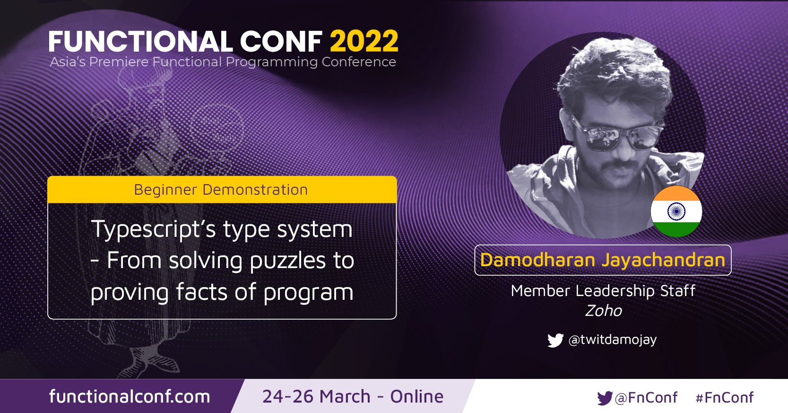

Typescript types
Solving puzzles
Proving facts of programs

Basics Of Typescript
Intro
- Typescript - Javascript + Types
- Types are present only in compile time
- Complete type erasure after compilation
Basics Of Typescript
Generics
- Strong typing Array, Promise and other common higher order structures
- Opens up gateway to type level recursion
Basics Of Typescript
Assertions
- Sometimes types need stronger clues
- With the base rules set, assertions can take care of runtime validations
Logical Programming
Solving simple puzzles
- Encode facts in structural types
- Populate the base data
- Let the type system do its magic!
Proving properties of programs
Type level arithmetics
- Defining Numerals using generics
- Defining operators using recursion
Proving properties of program
State machine encoding in type level!
Shhh... Dependent Types in disguise
Proving properties of program
Template literals
Proving properties of program
Typelevel lexers & parsers!
How does type level programming work
Type system - A minimal functional language in itself
- Generics are type level functions
- Functions i.e Generics compose easily
- And hence we encode any data using Church encoding - Making typescript's type system a mini lambda calculus**
Implication & future of programming
Formal verfication, Open source & testing
- Properties of programs verified by compilers - Formal verification & Theorem provers
- Scanning through large open source code bases for backdoors
- Test driven development suddenly mainstream ??
- And, proof driven development becomes the hip
Implication & future of programming
Spec oriented programming
- Types seem to be the dual of imperativeness**
- Types feel like teaching to a toddler about a domain**
- Specifications can be encoded at type level
- And provers can generate a proof - where one of them could be our correct program
Implication & future of programming
- Correctness - From hospitals to flights
- The next bank or a country's constitution could be only programs
- Bureaucratic machines can be replaced by (self amendment) programs**
- And so, taking chances is never an option...
Thanks
Inspiration & Regards
Thanks
Inspiration & Regards